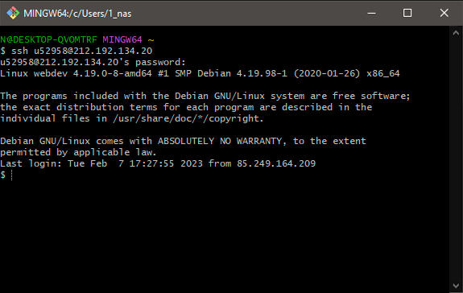
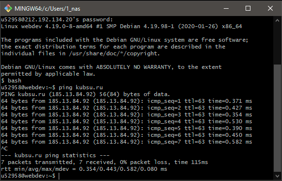
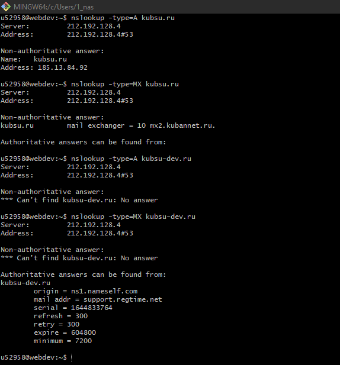
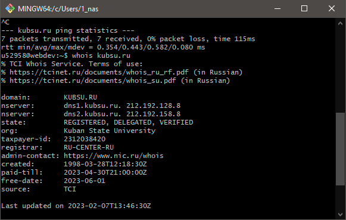
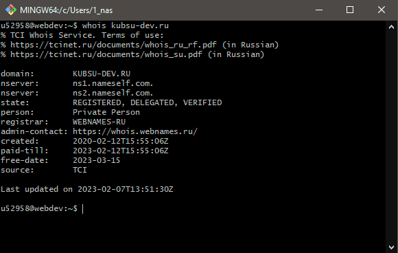
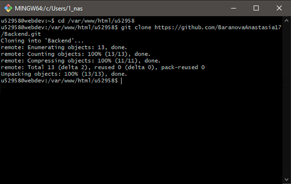
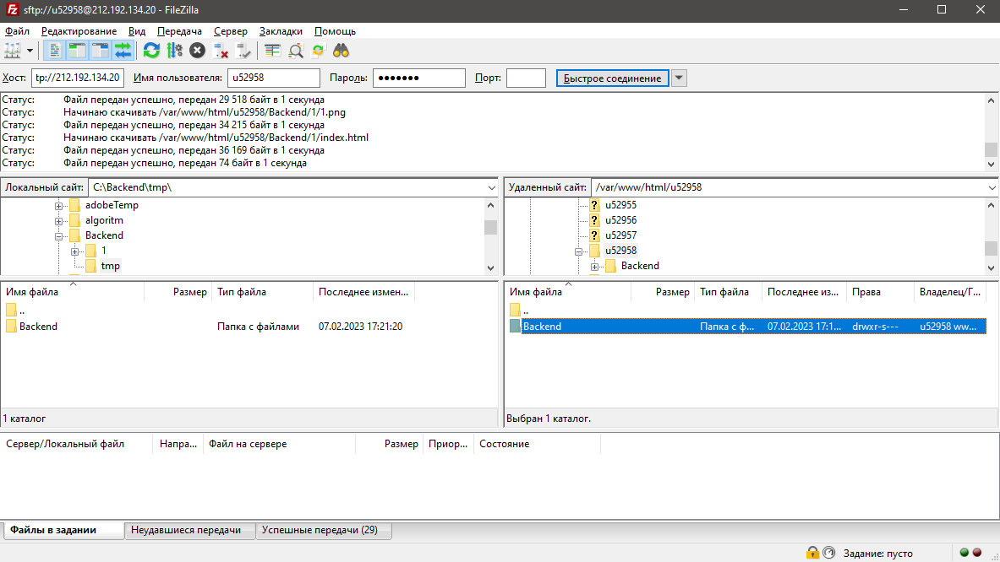

1. Откроем git bash Подключимся к учебному серверу по ip адрессу 212.192.134.20 с помощью команды ssh для этого
введем команду ssh u52958@212.192.134.20, где @ - разделитель, далее введем пароль

2. Используя команду ping, которая отправляет пакеты Internet Control Message Protocol на целевой хост, узнаем
ip адрес сервера kubsu.ru, для остановки отправки пакетов воспользуемся сочитанием клавиш ctrl+c, заскриним

3. Используя команаду nslookup обратимся к DNS и получим A - (адресную) и MX (почтовый шлюз+приоритет) записи
домена kubsu.ru и kubsu-dev.ru, заскриним

4. С помощью команды whois, котороая базируется на протоколе TCP, получчим регистрационные данные домена
kubsu.ru и kubsu-dev.ru, заскриним


5. Создадим веб страницу и загрузим скриншоты проделанной работы, загрузим вебстраницу на репозиторий гитхаба и
с помощью git clone сохраним её на учебном сервере. Для это необходимо после подключение с помощью ssh к серверу
перейти в путь /var/www/html/u52958 с помощью cd

6. Установим FTP клиент FileZilla пройдем авторизацию на сервере перейдем в путь описанный выше и обнаружем
папку с клонированным репозиторием, скачаем её на компьютер заскриншотим сообщение об успешном скачивании и
добавим на сайт
